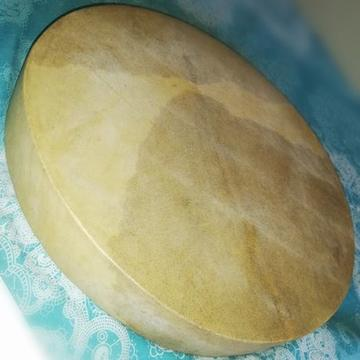
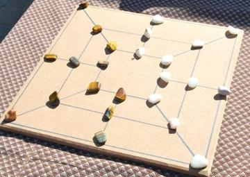
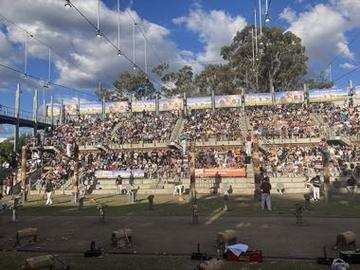
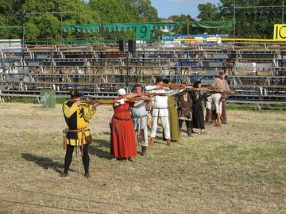
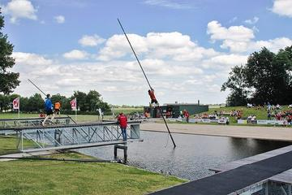
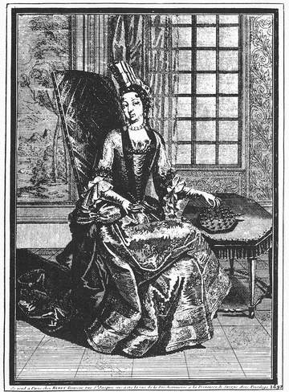

1800 to today
Modern Heritage
Street games, national sports and revivals: heritage that people are still playing in their own lifetimes.
- Celtic and Atlantic Europe (29)
- South Asia (25)
- Pacific and Oceania (24)
- Southeast Asia and the Islands (23)
- Japan and Korea (20)
- The Americas: North America (15)
- The Americas: Andes and South America (15)
- Northern and Eastern Europe (15)
- Mediterranean (14)
- Shared across the world (13)
- The Americas: Caribbean (13)
- Africa: Sahel, West and Central (13)
- China (10)
- Persia, Caucasus and Central Asia (10)
- The Americas: Mesoamerica (9)
- Mesopotamia, Levant and Arabia (8)
- Africa: Southern Africa (7)
- Africa: Great Lakes and Indian Ocean (7)
- Steppe and Arctic (4)
- Africa: Nile and the Horn (1)
Africa: Nile and the Horn 1

Egyptian Fractions and Doubling
Egypt · Puzzles and mind games
Africa: Sahel, West and Central 13

Abula
Nigeria · Street and playground games


Dambe
Nigeria +1 · Street and playground games

La Sape dress-up parade
Congo · Street and playground games
Ten Ten
Nigeria · Dexterity and skill gamesBulundu
DR Congo · Street and playground gamesKuli
Congo · Street and playground gamesPutu
Burkina Faso · Street and playground gamesYuyu
Burkina Faso · Street and playground games
Africa: Great Lakes and Indian Ocean 7

Kati
Kenya +1 · Street and playground games
Kwepena
Uganda · Street and playground games
Blada
Kenya · Dexterity and skill gamesDuulu
Uganda · Dexterity and skill gamesZambian children's games
Zambia · Street and playground games
Africa: Southern Africa 7



Mhele
Botswana · Street and playground games
Namib dune sandboarding
Namibia · Dexterity and skill games
Nguni stick-fighting rhythm skirmish
South Africa +1 · Dexterity and skill gamesPlay preview · in the Sports & Skill of the World appDibeke
South Africa +1 · Street and playground gamesKoi
Botswana · Street and playground games
Mesopotamia, Levant and Arabia 8

Al-Jazari water-clock contraptions
Iraq · Puzzles and mind games

Hama Noria Waterwheels
Syria · Puzzles and mind games

Phoenician Alphabet Trader
Lebanon · Puzzles and mind gamesAl Laqfa
Qatar · Dexterity and skill gamesSteel-and-stick
Turkey · Street and playground games
Persia, Caucasus and Central Asia 10

Astrolabe: reading the sky
Iran · Toys
Flower or Empty
Iran · Street and playground games
Qanat Water Tunnels
Iran · Puzzles and mind games
Alchik
Kyrgyzstan · Dexterity and skill gamesAshyk
Turkmenistan · Dexterity and skill gamesAsyk Atu
Kazakhstan · Dexterity and skill gamesLelo Burti
Georgia · Street and playground gamesOrdo
Kyrgyzstan · Dexterity and skill gamesWhite Cloth
Kyrgyzstan · Street and playground games
South Asia 25

Bashi
Maldives · Street and playground games

Break the pot
Sri Lanka · Dexterity and skill games

Dandi Biyo
Nepal · Dexterity and skill games

Elle
Sri Lanka · Street and playground games

Hill-country tea plucking
Sri Lanka · Puzzles and mind games


Pole-and-line tuna fishing from a masdhoni
Maldives · Dexterity and skill games
Stick game
Maldives +1 · Street and playground games
Stone put
Bhutan +1 · Dexterity and skill games

Dego
Bhutan · Dexterity and skill gamesGollachut
Bangladesh · Street and playground gamesPillow fight
Sri Lanka +1 · Street and playground gamesPitthu Garam
Pakistan · Street and playground games
China 10


Luban lock
China · Puzzles and mind games


Japan and Korea 20


Haenyeo Breath Dive
South Korea · Dexterity and skill games
Hangul syllable blocks
South Korea · Puzzles and mind games
Jegichagi
South Korea +1 · Street and playground games


Tuho
South Korea · Dexterity and skill games
Yukigassen Snow Fort
Japan · Water and winter sports
Southeast Asia and the Islands 23

Buffalo race
Cambodia · Street and playground games

Cublak-cublak suweng
Indonesia · Street and playground games
Dikir barat
Malaysia · Street and playground games
Gasing uri
Malaysia · Dexterity and skill games
Kaapse Klopse
Malaysia +1 · Street and playground games
Lato-lato
Indonesia +1 · Toys
Luksong tinik
Philippines · Street and playground games
Madura bull racing
Indonesia · Street and playground games
Phankhon
Myanmar · Street and playground games
Regional pony race meets
Timor-Leste · Street and playground games

Silat Melayu
Brunei · Street and playground games
Sipa
Philippines · Street and playground games
Tinikling
Philippines · Dexterity and skill games
Chapteh shuttlecock
Singapore · Dexterity and skill gamesHide the scarf
Cambodia · Street and playground gamesScarf-ball toss
Cambodia · Street and playground gamesTikhi
Laos · Street and playground games
Pacific and Oceania 24

Axemen woodchop
Australia · Other traditions

Hand-slap game
Fiji · Street and playground games
Ibibo
Nauru · Street and playground games
Kī-o-rahi
New Zealand · Street and playground games
Maori stick games
New Zealand · Dexterity and skill games
Marshallese stick chart navigator
Marshall Islands · Puzzles and mind games
Netball
Australia +1 · Team ball sports
Sand drawing
Vanuatu · Puzzles and mind games
Dart/spear throwing
Samoa · Street and playground gamesHeu
Tonga · Dexterity and skill gamesHighland and coastal contests
Papua New Guinea · Street and playground gamesHiko
Tonga · Dexterity and skill gamesItsibweb
Nauru · Street and playground gamesKasivaki
Tonga · Street and playground gamesKastom games
Vanuatu · Street and playground gamesRugby sevens
Fiji · Street and playground gamesSugar-cane spear throwing
Fiji · Street and playground gamesTraditional contests at Micronesian Games
Micronesia · Street and playground gamesTree-pull contest
Fiji · Street and playground gamesVillage rugby league
Papua New Guinea · Street and playground gamesWoggabaliri
Australia · Street and playground games
Mediterranean 14

Antikythera Gear Train
Greece · Puzzles and mind games



Crossbow shooting
San Marino · Street and playground games
Crossbow Target Match
Italy +1 · Dexterity and skill games
Euclid's Ruler and Compass
Greece · Puzzles and mind games

Ghadames Rooftop Maze
Libya · Puzzles and mind games
Gondola Rowing
Italy · Dexterity and skill games
Portolan Chart Navigator
Italy +2 · Puzzles and mind games
Ring Tilting
Croatia · Dexterity and skill gamesPlay preview · in the Sports & Skill of the World appLigrin
Cyprus · Street and playground gamesStick and Cingel
Albania · Street and playground games
Northern and Eastern Europe 15

Clockwork Movement Builder
Germany +2 · Puzzles and mind games

Hose-Run Fire Sport
Czechia +1 · Dexterity and skill games
Ice Stock Sport
Austria +1 · Dexterity and skill games
Kiiking
Estonia · Puzzles and mind games


Nail driving
Germany · Dexterity and skill games
Nohejbal
Czechia · Team ball sports
Pesapallo
Finland · Racing
Ringridning
Denmark · Dexterity and skill games
Svaika
Russia · Street and playground games
Varpa
Sweden · Dexterity and skill gamesFinger pulling
Austria · Street and playground games
Celtic and Atlantic Europe 29

Bagatelle
France +1 · Dexterity and skill games
Bat and Trap
United Kingdom · Dexterity and skill games
Bridge Stick Race
United Kingdom · Toys


Cynghanedd Poetry Puzzle
United Kingdom · Puzzles and mind games


Fierljeppen
Netherlands · Street and playground games
Harbour Street Circuit Time Trial
Monaco · Racing
Klootschieten
Netherlands · Street and playground games
Korfball
Netherlands +2 · Team ball sports
Krulbollen
Belgium · Street and playground games


Balle pelote
Belgium · Street and playground gamesFrisian kaatsen
Netherlands · Street and playground gamesPitch and toss
Ireland · Dexterity and skill games
The Americas: Mesoamerica 9

Mesoamerican ballgame
Guatemala +1 · Street and playground games
Pinata swing
Mexico +1 · Dexterity and skill gamesPlay preview · in the Sports & Skill of the World appChromos
Costa Rica · Dexterity and skill gamesCup-and-ball
Mexico · Dexterity and skill gamesEnchute
Honduras · Dexterity and skill gamesKriol traditional games
Belize · Street and playground gamesMacho parado
Nicaragua · Street and playground gamesMixtec ball game
Mexico · Street and playground games
The Americas: Andes and South America 15

Atarraya
Colombia · Dexterity and skill games
Chaza
Colombia · Street and playground games
Chilean Rayuela
Chile · Archery, throwing and target games
Chinchinero Drum Walk
Chile · Performance and storytelling
Emboque
Chile · Dexterity and skill games


Uyuni Salt Harvest
Bolivia · Puzzles and mind gamesFireball
Paraguay · Street and playground gamesManteo
Bolivia · Street and playground gamesPerinola
Venezuela · Dexterity and skill gamesYermis
Colombia · Street and playground games
The Americas: Caribbean 13

Four Corners
Cuba · Street and playground games
Grenada Nutmeg Grading
Grenada · Puzzles and mind gamesHandkerchief game
Dominican Republic · Street and playground gamesHeritage games
Saint Lucia · Street and playground games
Jamaican Sound System Selector
Jamaica · Musical instruments

Rounders
Guyana · Street and playground games

Stickball
Cuba · Bat-and-ball games
Street play games
Trinidad and Tobago · Dexterity and skill gamesBurn-out
Cuba · Street and playground gamesCush
Guyana · Dexterity and skill gamesDraughts
Barbados +5 · Board and table games
The Americas: North America 15


Table shuffleboard
United States · Dexterity and skill games

Trick Roping
United States · Dexterity and skill games
Steppe and Arctic 4

Ger raising
Mongolia · Puzzles and mind games
Ail ger
Mongolia · Dexterity and skill gamesAlag Malkhii
Mongolia · Dexterity and skill games
Shared across the world 13


Shepherd's Leap
Worldwide · Puzzles and mind games

Whistled Language Relay
Worldwide · Puzzles and mind games